Send whatever you've got, in whatever state — a couple of lines typed on a phone, a list of names, a thing that went wrong, a meal worth remembering, a person you met. It gets written up, filed under the right leg, and where it changes the advice elsewhere on the site, the other pages get updated to match.
Useful when you have it: roughly when, roughly where, and who was involved. Everything else is optional. Photographs can be dropped alongside and captioned.
Two kinds of entry are worth separating:what happened, which lives here, and what we learned about the place, which goes on Field notes. If something is both, it gets written up here and cross-linked there.
Kathmandu Valley
26 – 28 September · Patan, Boudhanath, Pashupatinath
Nothing filed yet
The arrival, the first evening in Patan, the temple day. Anything from the Indra Jatra crowds if you made it up to Durbar Square.
Bhutan
28 September – 6 October · Thimphu, Punakha, Phobjikha, Paro, Bumdra
Mon 28 September · KB401 Kathmandu → Paro
The flight in, along the roof of the world
From the left-hand side, heading east: most likely Everest on the left and Makalu, the clean pyramid, on the right.
A favourite part of the whole trip, and it lasted barely an hour. Sitting on the left paid off: once the plane climbed out of the valley the whole range lined up along the window — snow from one side of the frame to the other, the high summits standing clear of everything else, and the Tibetan plateau a flat brown line beyond. Worth every bit of the fuss about seat allocation.
DrukairEverestleft side
Mon 28 September · Paro International Airport
Down between the hills, and out onto the apron
Paro: no jet bridges, no terminal buses — down the steps and across the tarmac, with the valley wall close enough to count the trees.
After the Himalaya, the descent: the plane threads down the Paro valley with forested ridges on both sides before a last turn onto the runway. Then the steps, warm sun, thin clean air at about 2,200 m, and the first look at Bhutanese buildings — even the airport is built in the traditional style, painted window frames and all.
Why this landing is special. Paro sits at 2,235 m in a narrow valley ringed by mountains of more than 5,000 m. The runway is only 2,265 metres long — tight for a passenger jet at this altitude, where the thin air makes planes land faster and roll out longer. There is no straight approach: the pilot flies into the valley, weaves along the slopes and only lines up with the runway at the last moment, low over the houses. It is flown entirely by sight, with no instrument landing system to guide the plane down, which is why landings happen only by day and in good weather. Flying in requires a separate training and qualification; by the figures that circulate there are only a few dozen such pilots in the world — somewhere between 25 and 50, almost all of them with Drukair and Bhutan Airlines. So one of them brought us down.
ParoDrukairarrival
Mon 28 September · Thimphu
A capital with no traffic lights
The pavilion on Norzin Lam, Thimphu's main street, where the traffic is still directed by hand.
Thimphu famously has no traffic lights. One was put up once, and residents complained it was too impersonal, so it came down again and the police went back to directing the junction from this painted pavilion — every gesture crisp, white gloves and all. Watching it for a few minutes is a fair introduction to the country: everything a little slower, more deliberate and more decorated than it strictly needs to be.
Thimphustreet life
Mon 28 September · School of Arts and Crafts, Thimphu
Printing our own prayer flag
Lungta printing: cloth over an inked woodblock, rubbed by hand, with a student keeping it straight.
The school teaches the thirteen traditional crafts — painting, woodcarving, sculpture, embroidery and the rest — and visitors get to try one. Ours was printing lungta, the "wind horse" prayer flags you see strung across every pass and bridge: the cloth goes over a carved and inked woodblock and is rubbed until the horse, the prayers and the four guardian animals come through. The five colours stand for the elements, and the idea is that the wind carries the prayers off the flag. Having made one, we look at every string of them differently now.
Thimphucraftsprayer flags
Tue 29 September · Motithang Takin Preserve, Thimphu
The national animal, assembled from leftovers
A takin picking its way across the stream in the preserve above Thimphu.
The takin looks as if it was put together from spare parts, and according to Bhutanese legend that's exactly what happened. In the 15th century the saint Drukpa Kunley — the "Divine Madman", Bhutan's most beloved and least respectable holy man — was asked by villagers to perform a miracle. He demanded a whole cow and a whole goat for lunch, ate both, then stuck the goat's head on the cow's skeleton, snapped his fingers, and the creature got up and wandered off to graze.
Zoologically it's a goat-antelope, closest to the musk ox and the sheep, and built for steep cold slopes: thick oily coat, a big Roman nose that warms the air on the way in, and a weight of up to 350 kg on surprisingly nimble legs. It became the national animal in 2005. The preserve exists by accident — Thimphu once had a small zoo, which the Fourth King closed as un-Buddhist, but the released takin refused to leave and kept wandering the streets of the capital looking for food, so they were given this patch of hillside forest instead.
ThimphuwildlifeDrukpa Kunley
Tue 29 September · Wangditse Lhakhang, above Thimphu
The walk up to Wangditse
The trail through the pines, strung with lungta.Wangditse on its ridge, with Thimphu down in the valley.Inside the courtyard: carved, painted eaves and flowers on every step.
A walk along the hillside above the city — through blue pine, under strings of prayer flags, and out onto an open ridge with Thimphu laid out below. Wangditse Lhakhang was founded in 1715 and is one of the oldest temples around the capital; after centuries of earthquakes and wear it was carefully restored in recent years, which is why the woodwork looks so fresh.
On the flags: the coloured ones along the trail are lungta, like the one we printed the day before — blue, white, red, green and yellow for sky, cloud or air, fire, water and earth, always hung in that order. Each time the wind moves them the prayers are thought to be carried outward, so a flag fading to grey is doing its job. The tall white flags on poles, like the cluster beside the temple, are a different thing: manidar, raised in sets of 108 for someone who has died.
Thimphuwalkprayer flags
Tue 29 September · Lunch
Potato momos and ting momos
Ting momos in front — twisted, steamed, no filling — with potato momos and soup behind.
Momos came over the mountains from Tibet and are now as Bhutanese as they are Nepali, but the fillings here lean vegetarian: potato, cabbage and above all cheese, often with a hit of chilli. That isn't only taste. Killing animals sits badly with Bhutanese Buddhism, so very little slaughtering happens in the country — most of the meat on a Bhutanese menu has come in from India, and in the holy months of the lunar calendar its sale is banned altogether.
The ting momo (or tingmo) is the plain one: a sheet of dough brushed with oil, folded and twisted into a knot, then steamed. It has nothing inside, and isn't meant to — it's the bread you tear up to mop a curry or a bowl of soup.
foodmomos
Tue 29 September · Dochula Pass, ~3,100 m
108 chortens on the pass
The Druk Wangyal chortens, with the eastern Himalaya hiding behind the cloud.
The road from Thimphu to Punakha crosses the range at Dochula, and the top of the pass is crowned with the 108 Druk Wangyal chortens — 108 being the sacred number in Buddhism, the number of beads on a mala. They're recent: built in 2004 by the eldest Queen Mother, Ashi Dorji Wangmo Wangchuck, as a memorial for the Bhutanese soldiers killed in December 2003, when the army drove Indian separatist militants out of their camps in the southern forests. The temple on the hillside beside them honours the Fourth King, who led the troops himself.
On a clear day — mostly winter mornings — the whole eastern Himalaya lines up behind them, including Gangkar Puensum at 7,570 m, the highest mountain in the world that has never been climbed. Bhutan closed its high peaks to mountaineering in the 1990s out of respect for the gods believed to live on them, so it will likely stay that way. We got clouds instead, which at 3,100 m is the usual deal.
Dochulachortenshistory
Tue 29 September · Punakha
A short walk in Punakha
A temple and its row of chortens catching the evening light on the ridge across the valley.
Hotel Khuruu Khuruu, named after the national darts game, with a donkey on the verge.A grocery wholesaler, dressed like a small palace, with the royal portrait over the door.
After the cold of Dochula, the road drops more than 1,800 m into Punakha, and it feels like a different country: warm, green, rice terraces down by the rivers. Punakha was Bhutan's capital until 1955, and the valley is low enough to be where the monastic body moves for the winter.
The walk round town shows the rule you start noticing everywhere: by law, every building in Bhutan has to look Bhutanese. A grocery wholesaler, a mid-range hotel, a concrete block still in its bamboo scaffolding — all get the carved wooden window bays (rabsel), the painted lotuses and dragons, and the wide roof raised on a gap above the top floor, which in a farmhouse is open loft space for drying hay and chillies. Above the door, the royal portrait — you find it in every shop, office and restaurant.
And the hotel name: khuru is the national darts game, played with heavy hand-made darts thrown at a small target 20 metres or more away — with the opposing team standing near the target, shouting and dancing to put you off.
Punakhaarchitecturekhuru
Tue 29 September · Dhumra, Punakha
Night at Dhumra
Punakha Dzong lit up in the valley below, and a nearly full moon over the hills.
The first of two nights at Dhumra, on the hillside above the valley. After dark the whole landscape goes black except for a scatter of farmhouse lights — and Punakha Dzong, floodlit gold, looking like it's floating. The moon was a few days past full, bright enough to throw shadows.
Dzongs are fortresses in name only now: they are still working buildings, half monastery and half district government, with monks in one courtyard and civil servants in the other.
PunakhaDhumranight
Wed 30 September · Farm homestay, Punakha valley
A morning in a farmhouse
The farmhouse kitchen: baskets on the wall, rice drying from the beams, the kings on the back wall.Our guide, our host, and a white scarf and a cup of the house ara for the guest.
A morning in a working farmhouse in the valley, welcomed in like family. Traditional Bhutanese farmhouses are built of rammed earth and timber without a single nail, with the family living on the upper floor, animals and storage below, and the open loft under the roof for drying. The rice hanging from the beams is the new harvest — late September is when the paddies of Punakha, Bhutan's rice bowl, turn gold and come in. And on the back wall, as in every home in the country, the kings.
Making ara: fermented grain below, a bowl of cold water on top, a cloth to seal the joint.A wooden lever press squeezing safflower oil out through a woven cane ring.
Ara is the farmhouse spirit, and every household makes its own — from rice, maize, barley, wheat or millet, whatever the farm grew. The fermented grain is heated in the bottom pot; the vapour rises, hits the underside of a bowl of cold water sitting on top, condenses, and drips into a cup hidden inside. The rag wound round the middle keeps the steam in. It comes out clear and anywhere from mild to fierce, and is served warm, sometimes with butter and a scrambled egg stirred in, as a morning drink. Etiquette says the host offers and the guest declines — meshu meshu, "no, no" — once or twice before accepting; the cup keeps coming either way.
Next to it, the oil press: crushed safflower seed is packed into a woven cane ring, a heavy beam is levered down on top, and the oil runs out of a spout cut into the base. Safflower is the thistle-like plant whose orange petals were once a cheap stand-in for saffron; here it is grown for its seed, and the oil goes straight into the farm kitchen. It's the kind of thing every farm once had and few still use.
On the floor, the way it's done: tea from the aluminium pot, ara in the little glasses, and bowls of roasted rice and flattened corn to snack on.
Then everyone sat down on the floor for tea and snacks. Bhutanese hospitality runs on tea — usually suja, butter tea made with salt rather than sugar — and on bowls of roasted rice (zaw) and flattened, toasted corn to eat by the handful between cups. Ours came with homemade ara, from the same pot still. The white scarf in the photo with our guide is a khadar, the scarf of welcome and good wishes given to a guest; you accept it with both hands.
Punakhahomestayarafood
Wed 30 September · Khamsum Yulley Namgyal Chorten
Up through the rice to the Queen's chorten
Khamsum Yulley Namgyal Chorten, straight on.Three storeys of carving and gold leaf.The view from the top: the Mo Chhu and the rice ready for harvest.
A walk up from the river through the paddies — gold now, a week or two from harvest — to a temple on a hilltop above the Mo Chhu. It looks centuries old and isn't: Khamsum Yulley Namgyal Chorten was commissioned by Queen Mother Ashi Tshering Yangdon Wangchuck and consecrated in 1999, built to protect the then Crown Prince, now the Fifth King, and to bring peace to the world. The name means roughly "the chorten of victory over the three worlds".
What makes it unusual is how it was designed. There were no architect's drawings; the builders worked from proportions laid down in Buddhist scripture, the way temples were made for centuries. Inside, the floors are filled with large and fierce protective deities — chiefly Vajrakilaya, wielding his ritual dagger — and stairs lead up to a roof terrace with the view in the last photo: the whole valley, river and rice terraces, stretching back toward Punakha.
Punakhatemplewalk
Wed 30 September · Punakha suspension bridge
The bridge that bounces
About 180 metres of steel and cable over the Pho Chhu — open to everyone.
Just upstream from the dzong, a long suspension bridge crosses the Pho Chhu — at around 160 to 180 metres, the longest in Bhutan. It moves under your feet, side to side as well as up and down, and moves more when someone in the middle decides to find out how much. Anyone can walk across, and most visitors to Punakha do. It was built in 1997 to link the dzong with the villages on the far bank — Shengana, Samdingkha and Sangkha — and the people there still use it every day, threading past the tourists, the selfies and the prayer flags tied along the cables.
The two rivers that meet at Punakha are paired as male and female: the Pho Chhu ("father river") and the Mo Chhu ("mother river"), which we'd looked down on from the chorten. Punakha Dzong sits on the tongue of land where they join.
Punakhabridge
Wed 30 September · Dhumra, Punakha
Dusk over the dzong
Punakha Dzong at the meeting of the two rivers, from Dhumra as the lights came on.
The second evening at Dhumra, and this time we caught it at dusk: the light going off the rice fields and the dzong coming on, sitting exactly where the Pho Chhu and Mo Chhu meet. Punakha Dzong was built in 1637–38 by the Zhabdrung, the Tibetan lama who unified Bhutan, and its full name, Pungthang Dewa Chhenbi Phodrang, means "palace of great happiness". It's the second-oldest and second-largest dzong in the country, the place where the First King was crowned in 1907 and where the Fifth King married in 2011 — and somewhere inside, sealed in a chapel few people may enter, the Zhabdrung's embalmed body is still kept.
PunakhaDhumradzong
Thu 1 October · Punakha Dzong
In kira to the palace of great happiness
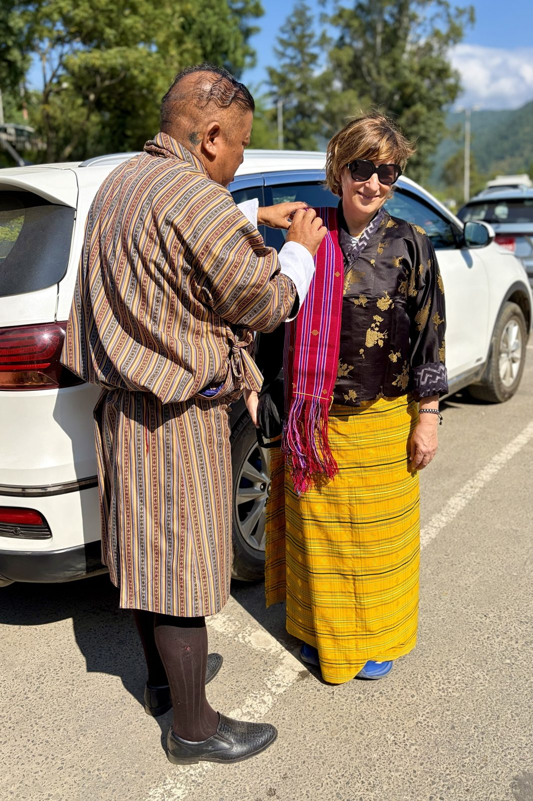
Finishing touch: the rachu goes over the left shoulder.
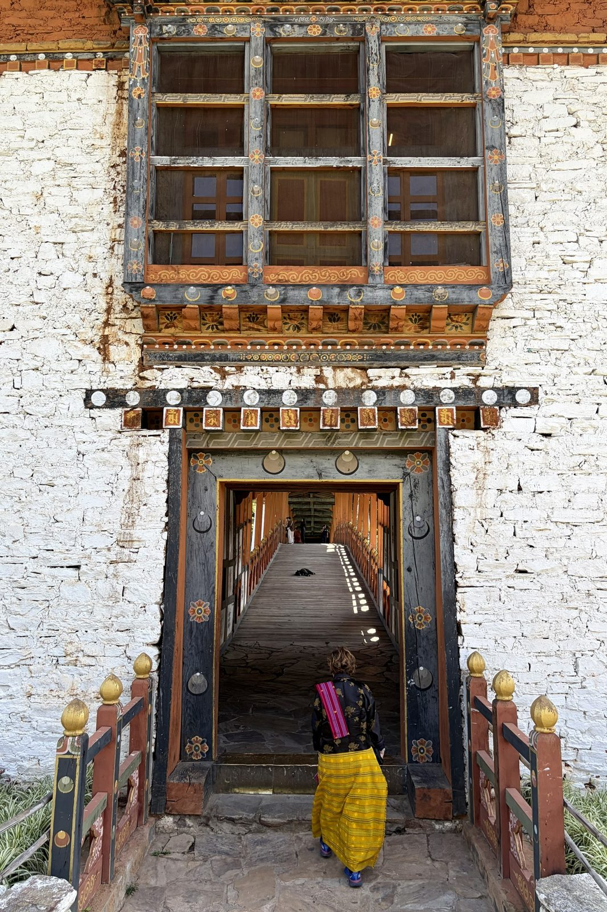
Through the gate to the covered bridge over the Mo Chhu.
In the car park we first got dressed, and there's more to it than you'd think. The kira is a large rectangle of woven cloth wrapped around the body down to the ankles, pinned at the shoulders with silver brooches (koma) and tied at the waist with a woven belt (kera). Under it goes a blouse, the wonju, and over it a short jacket, the tego. For a dzong there's one more thing: the rachu, a narrow woven sash worn over the left shoulder by women. Men add a kabney to their gho, a long scarf whose colour shows your rank — white for ordinary citizens, red for those honoured by the king, saffron yellow only for the king and the Je Khenpo.
For Bhutanese the dress is compulsory in a dzong; nobody expects it of tourists. But wear it anyway and you get a lot of smiles for it. The way in leads over the Bazam, the covered cantilever bridge over the Mo Chhu. The original was swept away in a flood in 1958; the bridge you cross today is a 2008 reconstruction, built the old way.
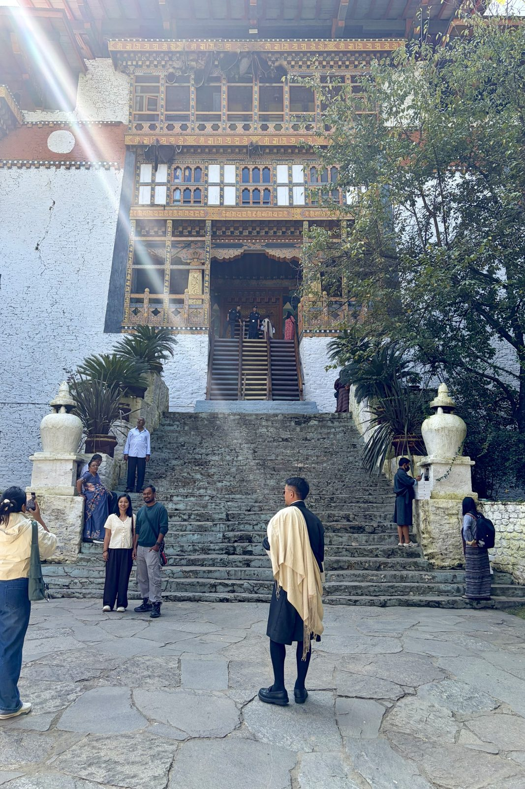
The steep wooden stair to the entrance — once pulled up when the dzong was attacked.
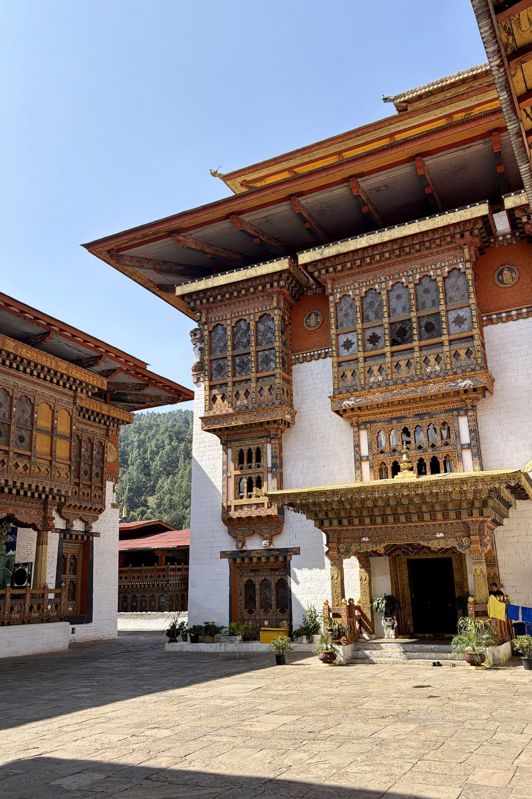
One of the courtyards, the window bays in gold, orange and black.
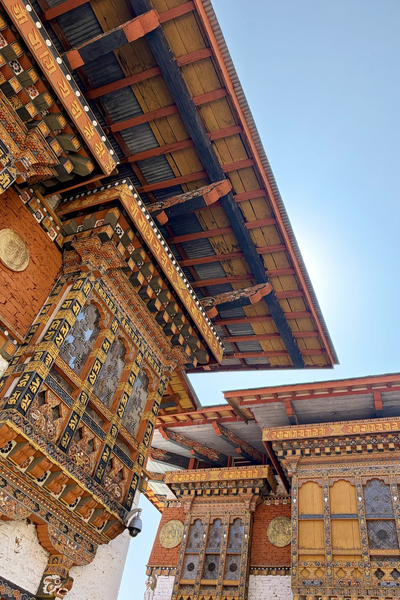
Carving everywhere, and golden mantra syllables along the beams.
Inside, it starts with a steep wooden stair up to the gate. It was built that way on purpose: in an attack it could be pulled up. Punakha Dzong needed that defence — several Tibetan invasions were beaten back here in the 17th century, a victory still re-enacted every spring at the Punakha Drubchen festival, by men in old armour.
Beyond it come three courtyards: first the district administration, then the monks' quarters, and right at the back the great temple hall with huge statues of the Buddha, Guru Rinpoche and the Zhabdrung. Every inch of woodwork is carved and painted, and the beams carry the syllables of mantras in gold. This is also where the Je Khenpo, the head of Bhutan's monks, lives with the whole central monastic body — but only in winter. As soon as Punakha gets too warm, they move up to Thimphu.
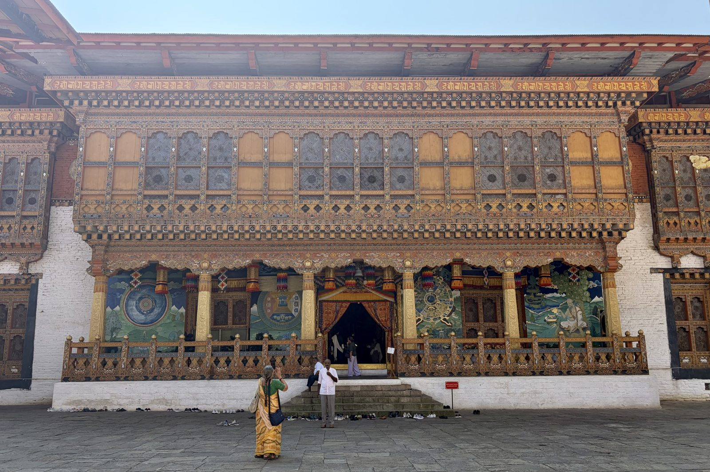
The temple hall, with the wheel of life and the man of long life on the walls — and the shoes neatly in a row.
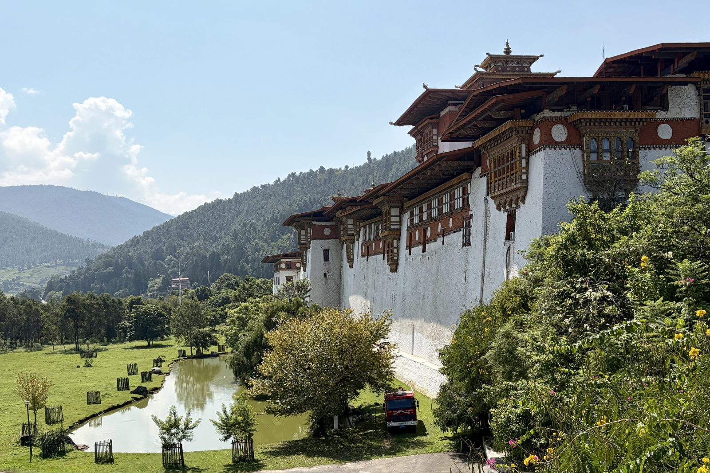
The outer wall from the garden, with the pond — and the fire engine that is always standing by.
Shoes come off in front of the great temple hall; the murals on its veranda turn up at almost every Bhutanese temple. The big wheel is the wheel of life: the cycle of birth, death and rebirth, gripped in the claws of the god of death. The old man under the tree is Tshering Gonpo, the old man of long life, with cranes and deer around him — symbols of health and old age. And the red fire engine by the outer wall isn't there for show: Punakha Dzong has burned down several times over the centuries, was badly damaged by an earthquake in 1897, and was hit by a flood as recently as 1994, when a glacial lake burst higher up in the mountains. Each time it was rebuilt. In spring the jacarandas in the garden flower purple.
Punakhadzongkiranational dress
Thu 1 October · Sangchen Dorji Lhuendrup
The view from the nunnery
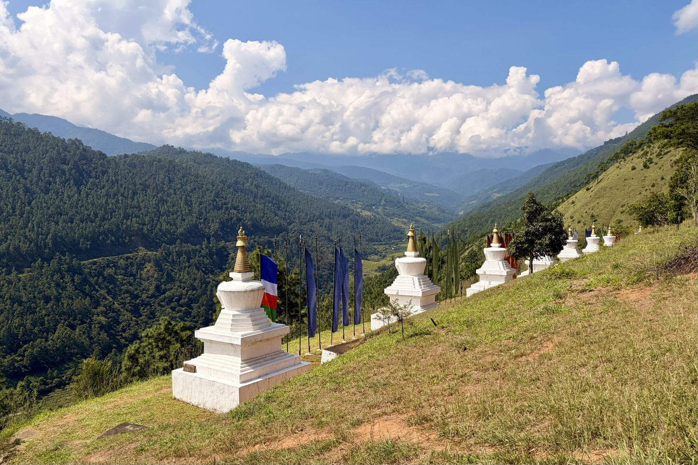
The row of chortens along the slope, and the valley far below.
High on a ridge above the valley sits the Sangchen Dorji Lhuendrup nunnery. We didn't really get to talk to the nuns themselves, but the view made up for a lot. It was built on the initiative of Queen Mother Ashi Tshering Yangdon Wangchuck — who also had the Khamsum Yulley Namgyal Chorten built — and it's more than a nunnery: it's a school where young women study Buddhist philosophy but also learn skills such as tailoring, embroidery and sculpture. In Bhutan that matters. For centuries monks had every chance of an education and nuns hardly any; places like this are meant to put that right. The temple holds a large bronze statue of Chenrezig, the bodhisattva of compassion.
Punakhanunsview
Thu 1 October · on the way to Phobjikha
Along the river, then up
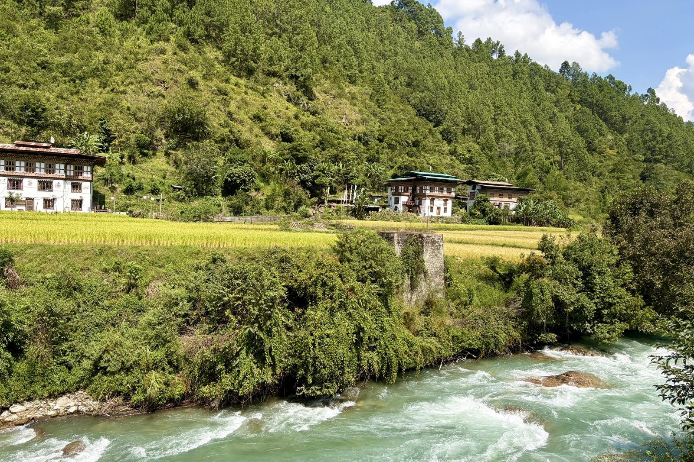
On the way: rice ready for harvest, farmhouses and a wild river.
The drive to Phobjikha starts low, along the river and the valley's golden rice fields, past farmhouses in the classic style: whitewashed walls, painted windows, an open loft under the roof. Then the road climbs up through the Nubding valley, from rice and banana trees to oak, rhododendron and finally pine and moss, over a pass at more than 3,300 m. In a few hours' driving you go from subtropical to alpine — and you feel it in the temperature.
on the roadPhobjikha
Thu 1 October · Phobjikha
Down off the hill into the bowl
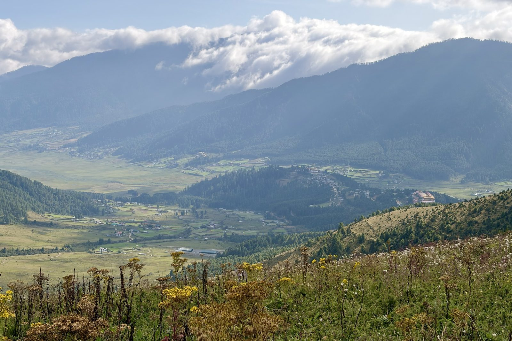
Phobjikha from above: the valley floor, and Gangtey monastery on the forested hill in the middle.
We did the last stretch into Phobjikha on foot: from a hill above the valley, down through wildflowers and pine forest, with the whole bowl below us. Phobjikha lies at about 3,000 m and is one of Bhutan's few wide, flat glacial valleys — the floor is partly marsh, which is exactly why the black-necked cranes winter here. On the forested hill in the middle of the valley you can see Gangtey monastery, where we were heading.
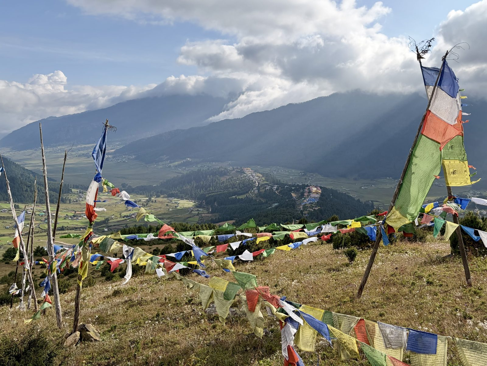
Prayer flags on the hill, with the monastery below in the sun.
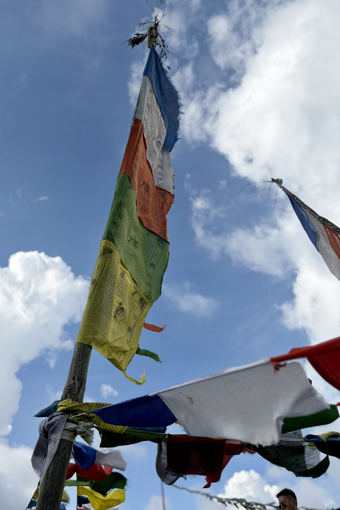
A vertical flag on a pole: blue at the top, yellow at the bottom, always in that order.
About the prayer flags. On day 1 we printed one ourselves, and at Wangditse we saw the long strings and the white flags for the dead. Here both kinds hang side by side, and up close you can see what's on them. In the middle of each flag is the lungta itself, the wind horse, carrying a jewel on its back that brings good fortune; in the four corners the four powerful animals: tiger, snow lion, garuda and dragon. Around them are prayers and mantras, often with the name or birth year of whoever had the flag hung. The five colours always go in the same order: blue (sky), white (wind or cloud), red (fire), green (water) and yellow (earth). Flags are hung on a day an astrologer judges auspicious, in high places where the wind has free play. You don't take an old flag down; you let it fade and fray, because then the wind has done its work, and you simply hang a new one beside it.
Phobjikhawalkprayer flags
Thu 1 October · Gangtey Goemba
A tent camp for the teacher
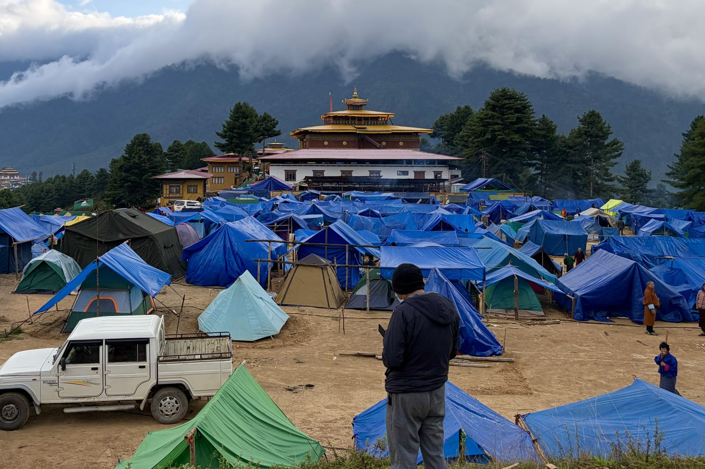
Hundreds of tents around Gangtey: families staying for days or weeks to listen.
Normally we'd have joined the monks for their chanting here, but the monastery turned out to be surrounded by a village of blue tarpaulins and little tents. A religious gathering was under way that, according to our guide, could last as long as 25 days. People come from all over the country, bring their blankets and cooking pots, and stay to the end. Our guide arranged for us to step into the temple anyway.
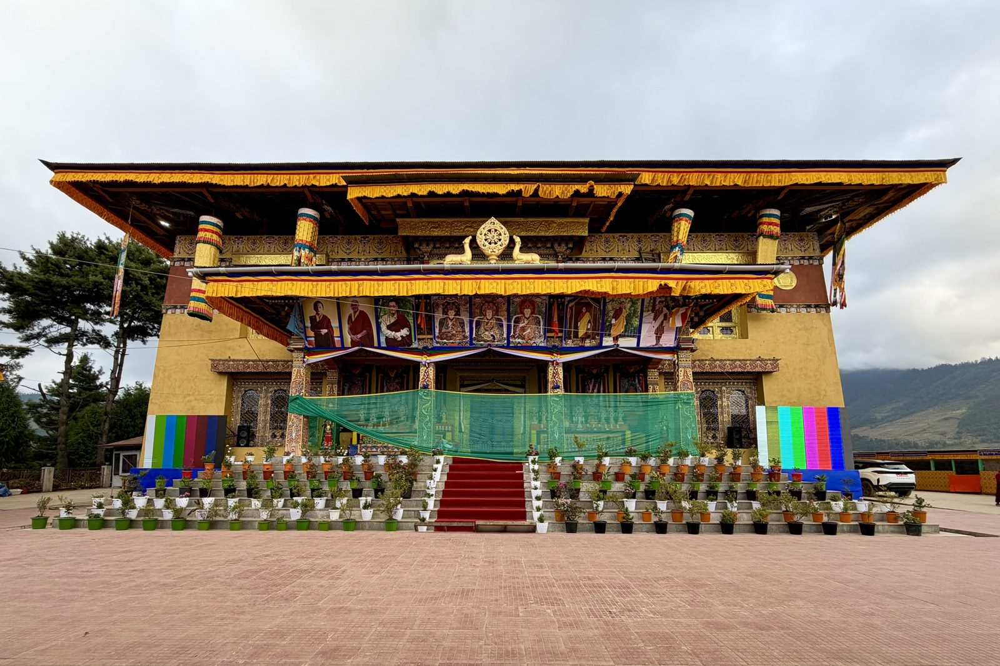
The temple set up as a stage: portraits of lamas and kings, screens left and right, a red carpet.
What we saw fits what Bhutanese call a lung or a wang. In a lung, an oral transmission, a senior lama reads a whole body of sacred texts aloud — sometimes the entire Kanjur, the words of the Buddha in more than a hundred volumes. Whoever hears it receives the blessing of those texts, even without understanding every word. That easily takes weeks, from morning to evening, which is why people camp. A wang is an empowerment, a blessing to begin a particular practice. The screens beside the temple are for the people outside: the "master", as our guide called him, chants and preaches inside, and the whole camp follows along.
Gangtey Goemba itself is the most important monastery of the Nyingma school in western Bhutan. It was founded in 1613 by Gyalse Pema Thinley, grandson of the great treasure-revealer Pema Lingpa, and is still the seat of his successive reincarnations, the Gangtey Trulkus. Between 2001 and 2008 it was completely rebuilt by local craftsmen, the traditional way. The annual Gangtey Tshechu with its masked dances fell at the end of September this year, just before we arrived — so what we saw was something else, and for the faithful perhaps even more important.
PhobjikhaGangteymonastery
Thu 1 October · Hotel Phobjikha
Evening in the crane valley
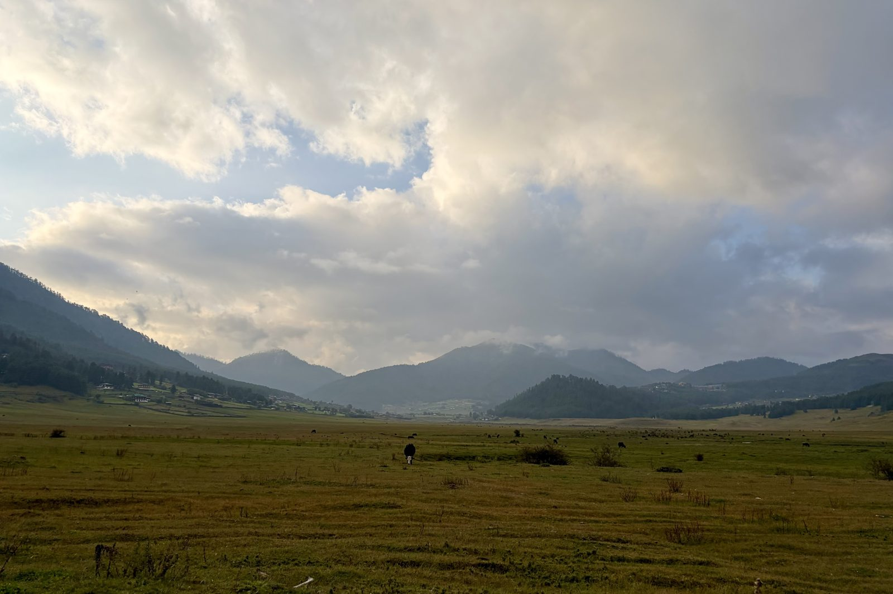
The valley floor on arrival: cows, grass and cloud. In a month the cranes will be here.
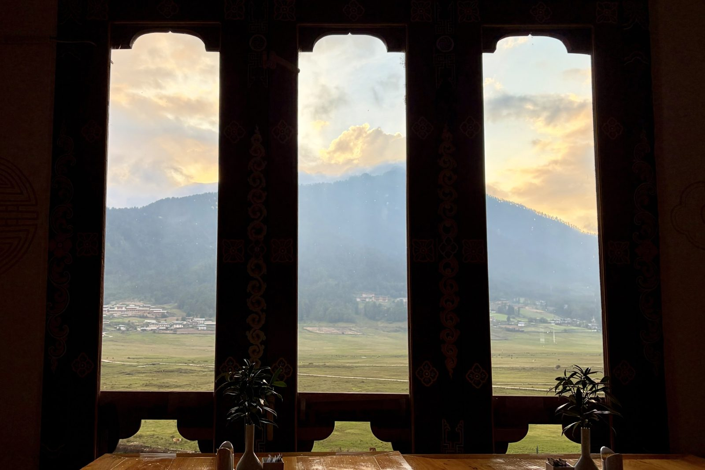
Dinner with a view: the valley through the dining-room windows.
At the end of the day we arrived at Hotel Phobjikha, at the edge of the valley floor. One look outside and you understand why the black-necked cranes come back every year: a wide, flat bowl of marsh grass ringed by forested mountains, without power lines (they run underground here) and with little more movement than the grazing cows.
From late October some five to seven hundred black-necked cranes land here after flying over the Himalaya from the Tibetan plateau. In Bhutan they're sacred: tradition says they circle Gangtey monastery three times on arrival, and again when they leave in February. On 11 November, while they're here, the valley holds the Crane Festival, with children in crane costumes dancing the birds' movements. We were a month early — but at the table, with the valley in the last sun behind those three windows, we had no complaints. And at night, at 3,000 m, it got cold, as promised.
Phobjikhahotelcranes
Fri 2 October · Phobjikha
A morning walk through the crane valley
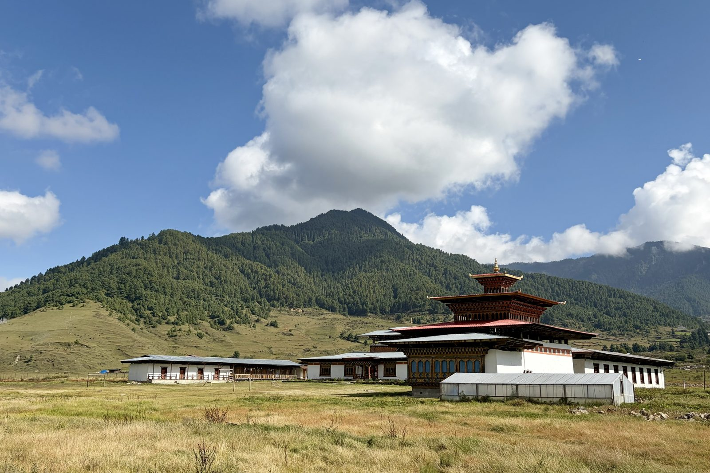
A temple on the valley floor, with the forested mountain behind.
The day started on foot: from the valley floor up along the slope to Gangtey monastery, on a narrow path through the grass. This is the country of the Gangtey Nature Trail, a walk of a few kilometres between the monastery and the villages and temples in the valley, through pine forest and open meadow, with hardly any climbing. It is one of the loveliest short walks in Bhutan, and in the morning, with the cloud still on the ridges, you have it almost to yourself.
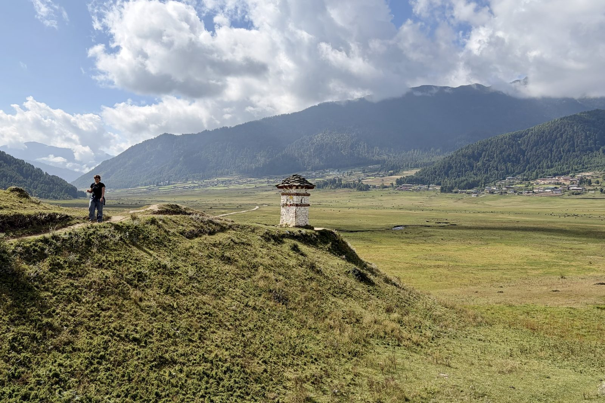
A small chorten by the path, with the whole valley behind.
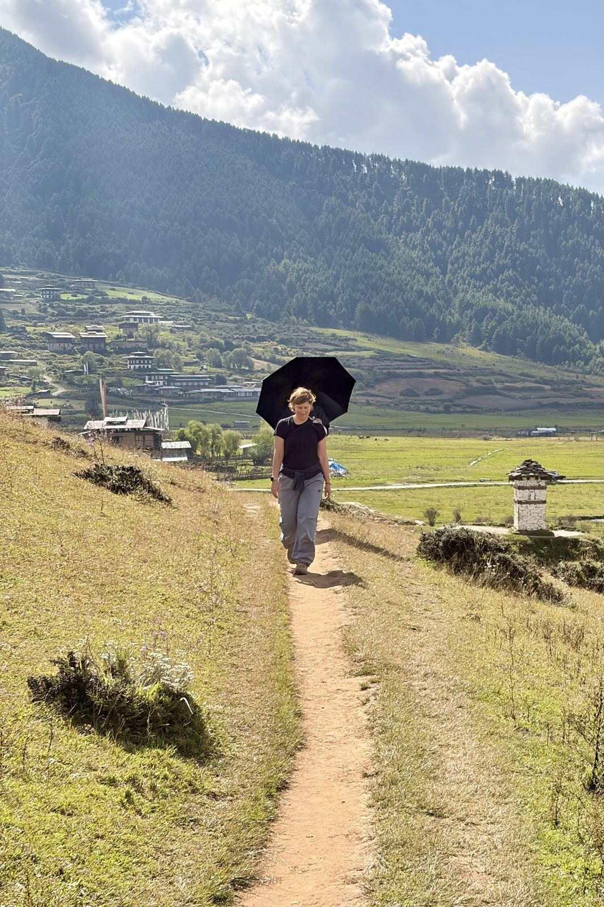
An umbrella against the sun, the Bhutanese way.
Small white chortens with slate roofs stand along the path, at spots where local tradition says a spirit or deity lives; you pass them clockwise. And the umbrella is no joke: at 3,000 m the sun is fierce, and Bhutanese use an umbrella against the sun as often as against the rain.
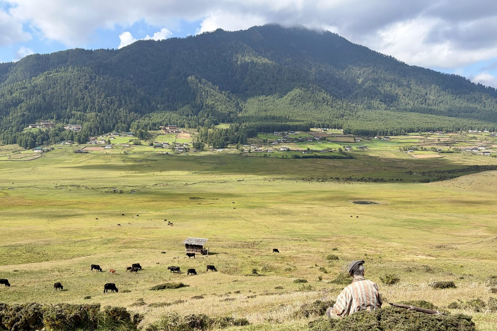
A farmer keeping an eye on his cows on the valley floor.
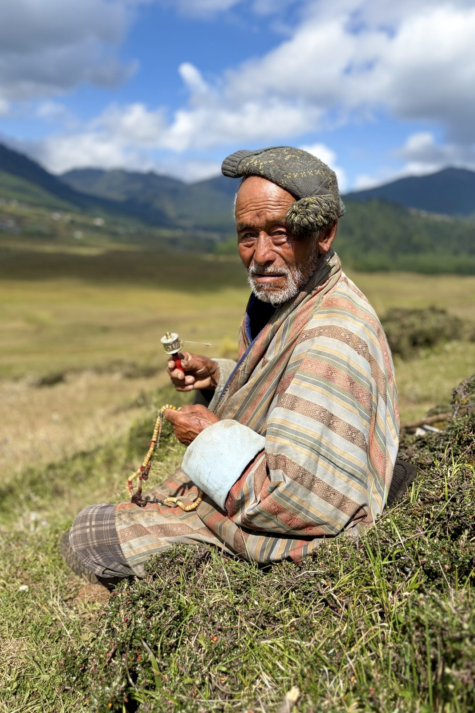
Prayer wheel in one hand, mala in the other.
Higher up the slope an older farmer sat in the grass, watching his cows on the valley floor. In one hand he turned a hand prayer wheel: inside the little cylinder is a rolled strip of paper printed thousands of times with the mantra Om mani padme hum, and every clockwise turn counts as reciting it. In the other hand a mala, a string of 108 prayer beads. Praying and minding the herd simply go together here. In summer the cows graze freely on the marsh grass; from late October they have to share the valley with the cranes, and the farmers here grow mainly potatoes, Phobjikha's main crop.
PhobjikhawalkGangtey
Fri 2 October · Gangtey Goemba
Gangtey, this time without the tent camp
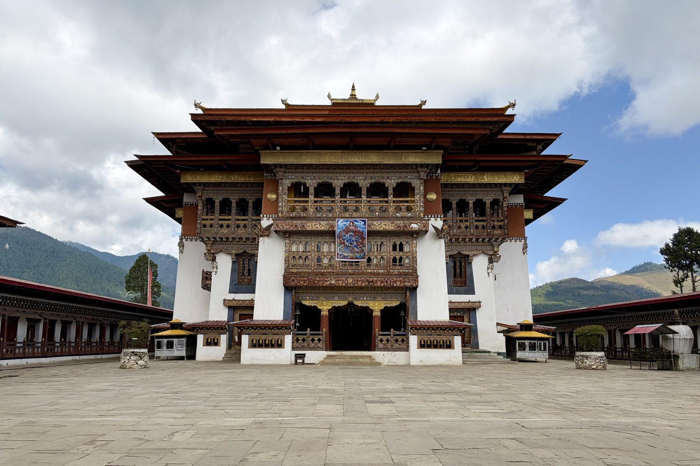
Gangtey's great temple hall, with a thangka above the entrance.
After the walk we came out at the top by the monastery, and this time the courtyard was quiet. The central temple, the tshokhang, rises out of a square of monastery buildings holding the monks' cells and classrooms, much like a small dzong. All the woodwork you see is new: during the 2001–2008 restoration the old timber turned out to be riddled with woodworm, and craftsmen from the area rebuilt the whole building stone by stone and beam by beam. Above the entrance hung a large thangka, a religious painting on cloth, of a wrathful protector deity: these are hung for festival days and big ceremonies, here presumably for the gathering that was still going on.
PhobjikhaGangteymonastery
Fri 2 October · Phobjikha
Through the valley by bike
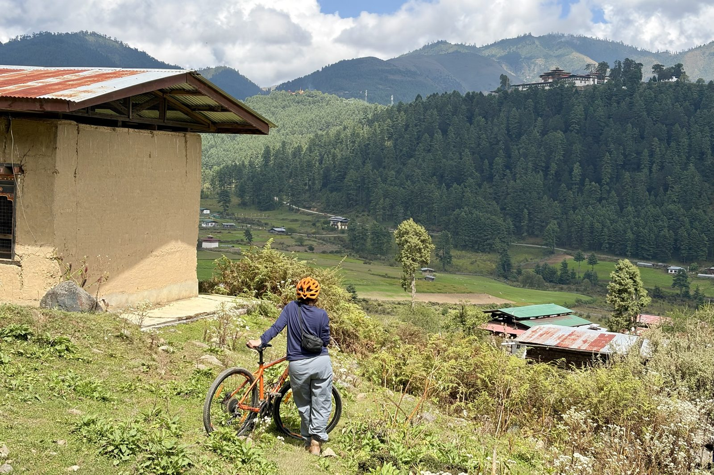
A pause above the valley, with Gangtey on its hill.
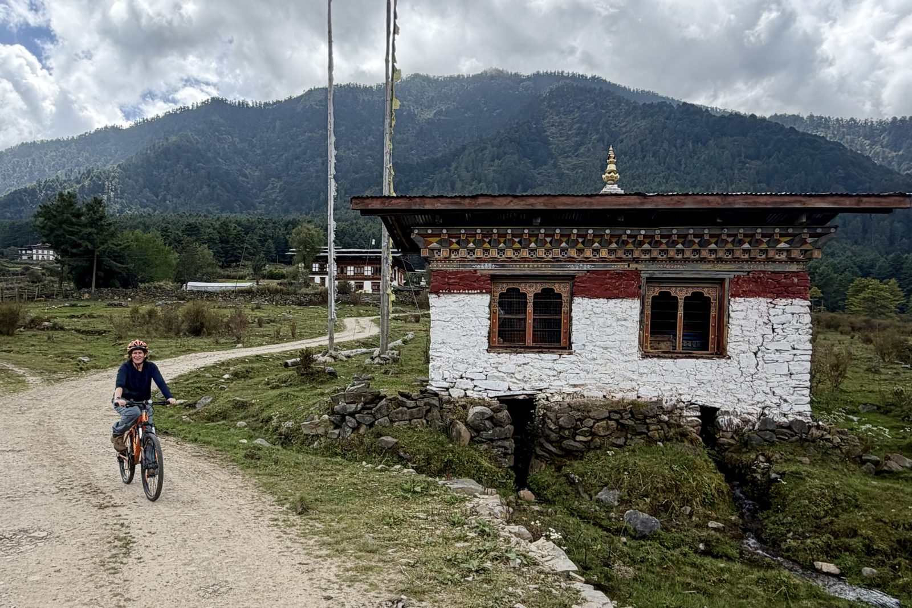
Past a little house over a stream: most likely a water prayer wheel.
Then onto the mountain bikes. Phobjikha is ideal for cycling: the valley floor is wide and flat, there is hardly any traffic, and sand and gravel tracks run between the villages. We rode a loop that climbed some way up the slope for a better view over the valley. On the way you pass small houses built over a stream: inside there is often a water prayer wheel (chukhor), turned by the running water. That way the mantra keeps turning day and night, and by belief the water blesses everything that lives downstream.
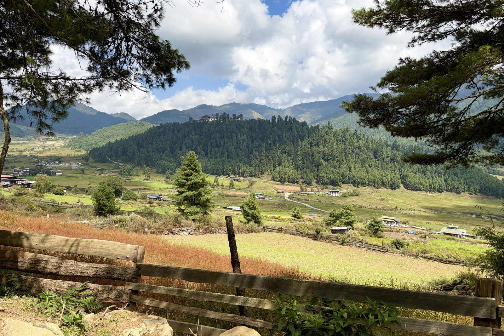
Over the fence: a russet plot and Gangtey on its hill.
The russet field in the foreground is most likely buckwheat, which turns red here in autumn before the harvest. Buckwheat and potatoes are the crops of this high, cold valley, where rice won't grow: Bhutanese turn buckwheat into pancakes (khuli) and noodles (puta).
PhobjikhacyclingGangtey
Fri 2 October · from Phobjikha to Lobesa
Lunch with a view, tea on the road, and rice at sunset
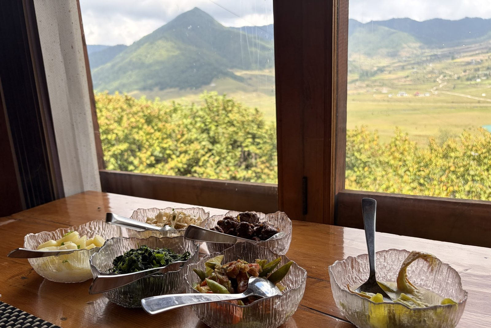
Lunch by the window, with the Phobjikha valley behind.
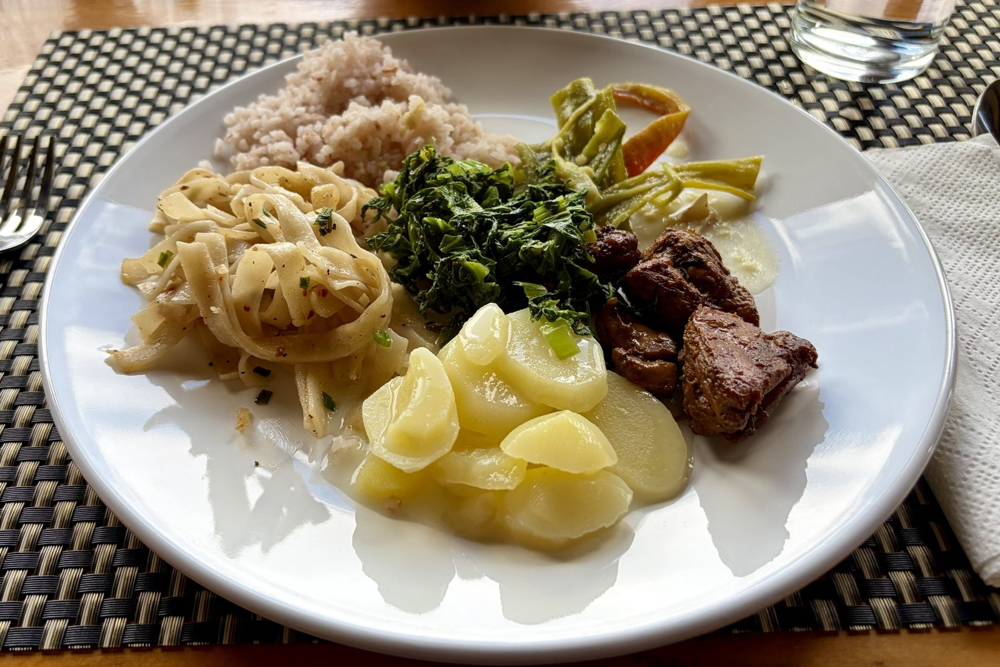
A plate of everything: red rice, kewa datshi, ema datshi and the rest.
Before leaving the valley, one more lunch with a view: a table by the window, everything in bowls to help yourself. On the plate the classics that turn up at nearly every Bhutanese meal: red rice, ema datshi (chillies in cheese sauce), kewa datshi (potato in cheese sauce), stewed greens, noodles and some meat. The principle is always the same: plenty of rice, and a few spicy or creamy dishes to go with it.
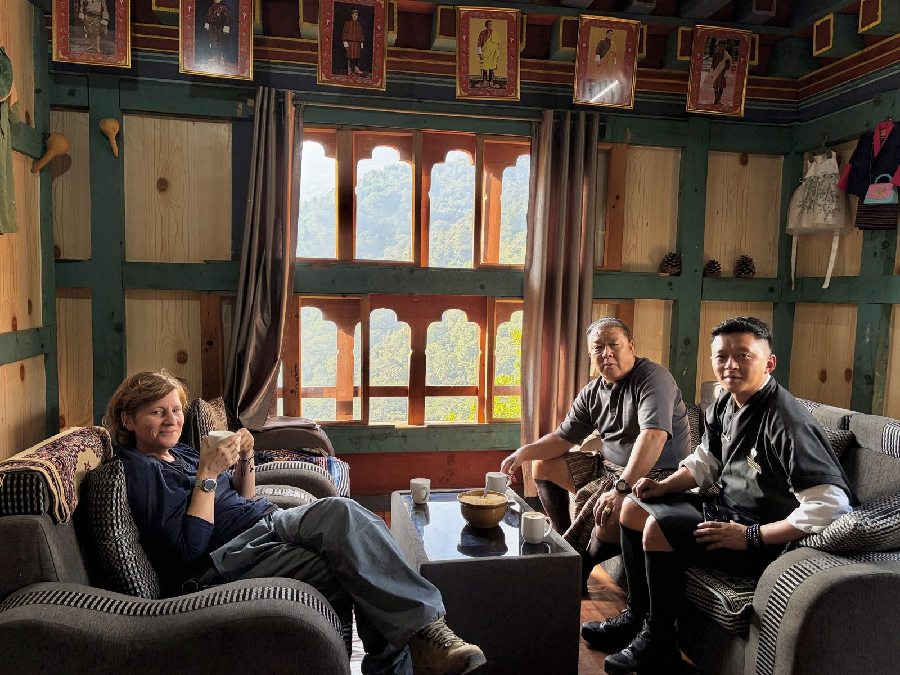
Tea and zaw with Jack (driver, striped gho) and Dawa (guide, black gho), under the row of royal portraits.
Halfway along the drive we stopped for tea at a roadside restaurant, on the recommendation of Jack, our driver, together with him and Dawa, our guide. Inside, a wooden room with big windows onto the forest, a bowl of zaw (puffed rice) on the table to eat with the tea, and under the ceiling the familiar row of portraits: all five kings of the Wangchuck dynasty, from the First King (1907) to today's, with the royal family alongside. A stop like this is almost a ritual in Bhutan: the roads are slow and winding, and the breaks long and sociable.
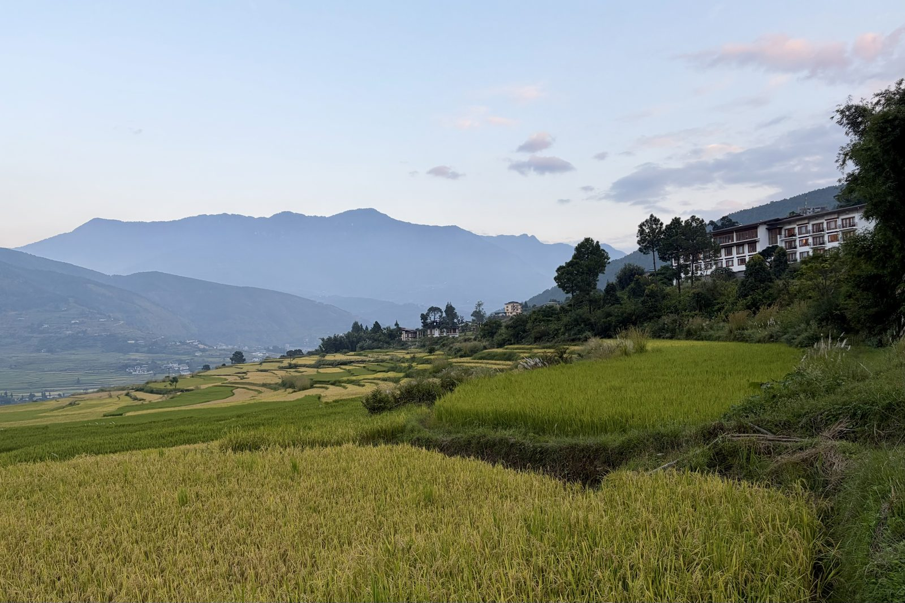
The rice terraces beside Lobesa Boutique Hotel, just before harvest.
At the end of the day we reached Lobesa Boutique Hotel, back down at around 1,350 m in the warm valley between Punakha and Wangdue. Right next to the hotel lie rice terraces, and we took one more walk among the fields as the light went. The rice stands golden and is nearly ready for harvest, which starts in this valley in October. Quite the contrast with the morning: from potatoes and buckwheat at 3,000 m to rice at 1,350 m, in a single day.
PhobjikhaLobesafoodrice
Sat 3 October · Chimi Lhakhang, near Lobesa
The temple of the Divine Madman
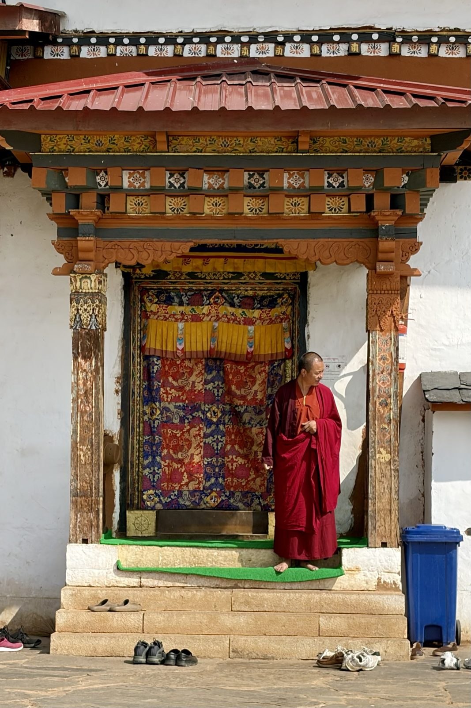
A monk at the temple door. Shoes stay downstairs.
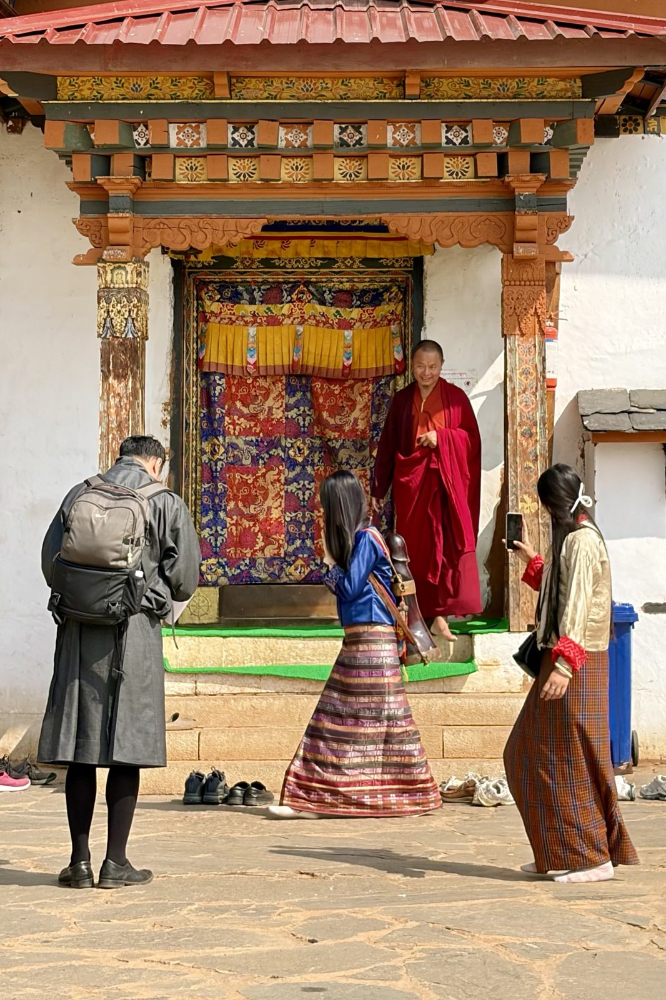
Three times round the temple, with the wooden symbol on your back.
The short version. Long ago, around 1500, there lived a holy man called Drukpa Kunley, the "Divine Madman". He was a monk who did not behave like a good monk: he drank, sang rude songs, flirted with everyone and laughed at the pompous lamas. His idea: you wake people up better with a shock and a joke than with a boring sermon. He is the same man who, by legend, assembled the takin — see day 2.
So why the phalluses? The stories say Drukpa Kunley beat evil spirits and demons with what he called his "flaming thunderbolt of wisdom". That is why all over Bhutan you see phalluses painted on houses and wooden ones hanging under the eaves: they keep evil spirits and gossip away. It isn't a joke and isn't meant to be rude — just protection, like a horseshoe over a door back home.
And the temple? Chimi Lhakhang was built in 1499 by his cousin, on the spot where Drukpa Kunley is said to have pinned down a demon. It is Bhutan's fertility temple: couples who want a child come here for a blessing. A monk taps you on the head with a wooden phallus, and the woman walks three times round the temple with a wooden symbol on her back. Many come back later to have their baby blessed, and the monks sometimes give the child its name.
PunakhaChimi LhakhangDrukpa Kunley
Sat 3 October · Chimi Lhakhang
At the astrologer's
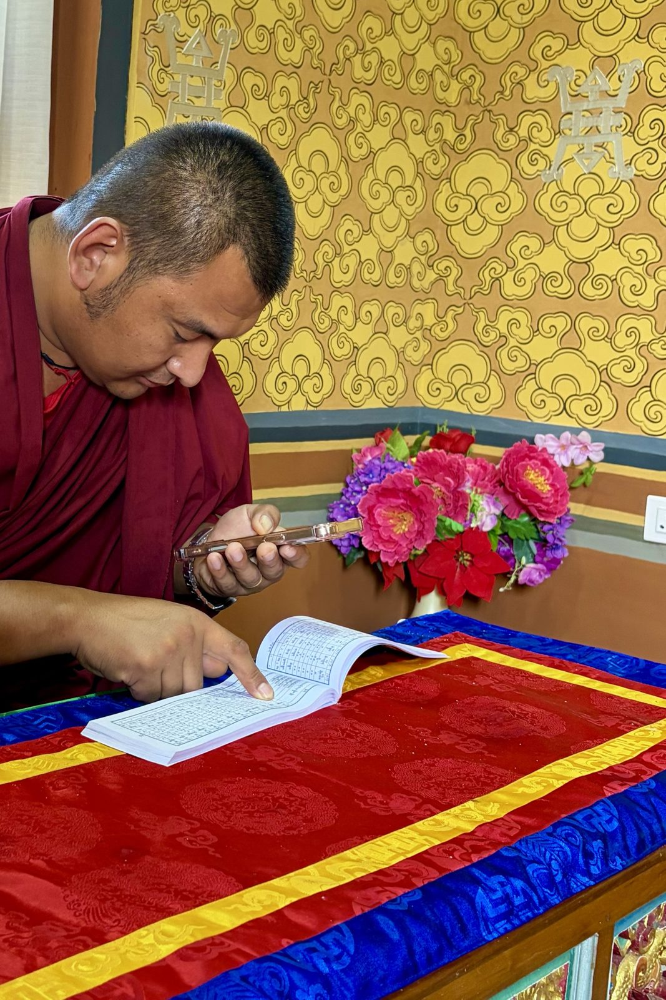
The astrologer reading our details: booklet of tables in one hand, phone in the other.
At the temple we also visited an astrologer, a monk with a booklet full of tables (and a phone). For each of us we got: our lucky day and bad day, our lucky number, our lucky colour, and which buddha or deity we should honour.
How does it work? Bhutanese astrology comes from Tibet and is a bit like the Chinese kind. Your birth year belongs to an animal (twelve in all: mouse, ox, tiger, hare, dragon, snake, horse, sheep, monkey, bird, dog, pig) and an element (wood, fire, earth, iron or water). Together they make a sixty-year cycle. The astrologer combines that with the day and hour of your birth, looks it up in the tables, and reads off which days are good or bad for you and what suits you.
Why does it matter? In Bhutan almost nothing big happens without an astrologer. A wedding, a new house, a journey, the date of a funeral, hanging prayer flags: first you ask which day is auspicious. Even royal ceremonies are timed this way. There is a dedicated school of astrology, and every village knows someone who can do it.
Punakhaastrology
Still to come
The night at Bumdra, coming down onto Tiger's Nest. And the guide and driver — the people usually turn out to be the story.
Bandipur & Sarangkot
6 October · the long road west
Nothing filed yet
How the drive actually went, two hours in Bandipur, and the first sight of the Annapurnas from Sarangkot.
Mardi Himal
7 – 11 October · five days on the ridge
Nothing filed yet
Day by day if you want it that way, or just the parts worth keeping: the teahouses, the weather, how the bodies held up, whether Base Camp happened, and the walk down to Siding.
The last days
11 – 17 October · Sarangkot, Pokhara, Nagarkot, Bhaktapur, Kathmandu in Dashain
Nothing filed yet
Sunset and sunrise on Sarangkot, the paragliding, the lake, the Nagarkot sunrise, Bhaktapur at dawn, and what Dashain looked like from the inside.